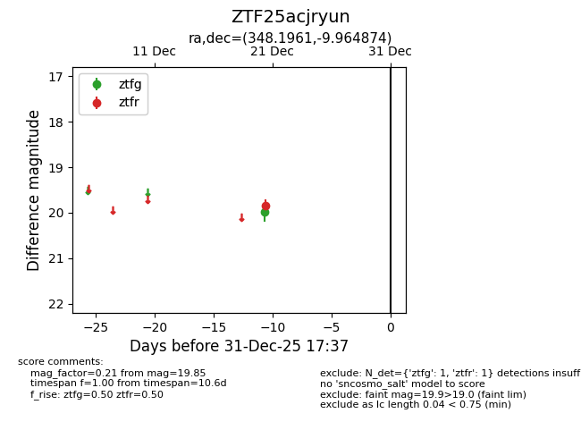
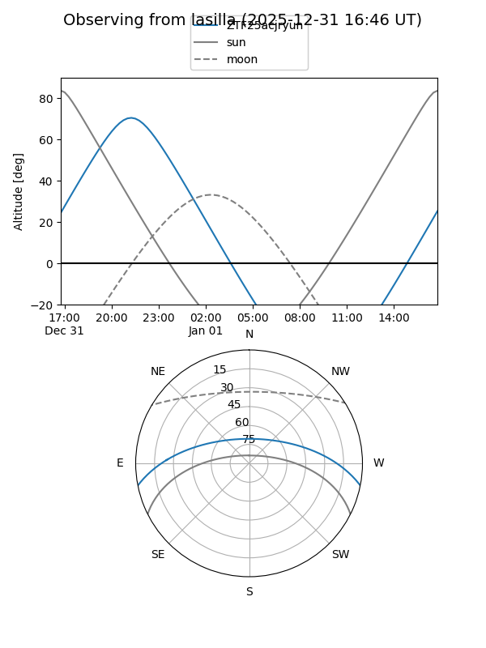
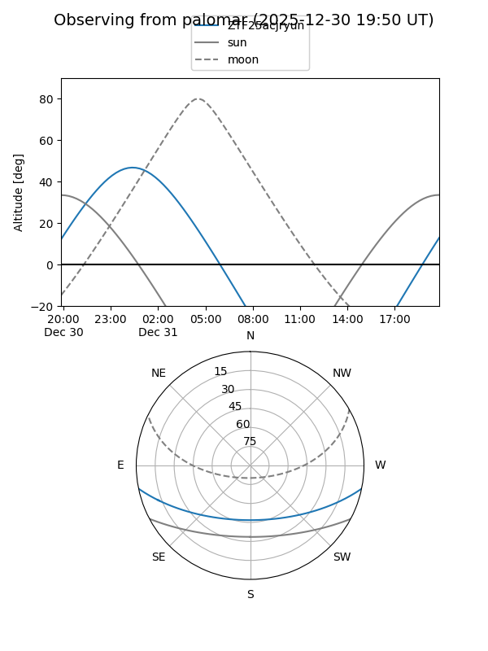

ZTF25acjryun
Target ZTF25acjryun at 2025-12-21 04:28
Aliases and brokers:
FINK: fink-portal.org/ZTF25acjryun
Lasair: lasair-ztf.lsst.ac.uk/objects/ZTF25acjryun
ALeRCE: alerce.online/object/ZTF25acjryun
alt names
ZTF25acjryun (ztf,fink_ztf)
Coordinates:
equatorial (ra, dec) = 348.1961,-9.96487
equatorial (HMS+DMS) = 23:12:47.05,-09:57:53.55
galactic (l, b) = (64.6616,-61.10452)
Flags:
Photometry:
last ztfg=19.99, ztfr=19.85
1 ztfg, 1 ztfr detections
Lightcurve

Visibility


Additional plots